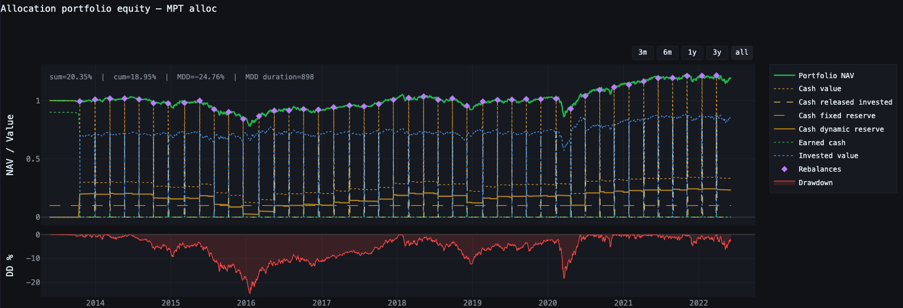

Moteur de backtest multi-stratégie, et couche de validation.
L'objectif du projet : réduire le temps entre une hypothèse d'investissement, son test
et sa validation. L'utilisateur écrit la logique de sa stratégie et configure
directement la trésorerie, l'emprunt, les frais et les devises du portefeuille. Le moteur
prend entièrement en charge l'exécution. Une couche de validation met ensuite le résultat
à l'épreuve. Elle peut aussi évaluer une stratégie déjà rentable afin d'estimer dans quelle
mesure ses performances peuvent se reproduire.
Un noyau compilé en Numba tient la comptabilité du portefeuille à chaque barre :
paliers de trésorerie, tranches d'emprunt indexées sur un taux de marché réel, plusieurs
devises, frais provisionnés sur une horloge et payés sur une autre. Trois modes
d'exécution partagent ce kernel : signaux algorithmiques, allocation de portefeuille,
et suivi d'un compte réel. La comptabilité de portefeuille appartient aux deux derniers.
Déclarer un portefeuille
40 lignes
réserves, emprunt, frais, devises
Coût d'une réfutation
3 lignes
trois appels, trois verdicts
Identité comptable
4,44 e−16
résidu maximal, neuf ans de barres journalières
Hors échantillon
jamais ouvert
30 % de l'historique scellé
Un noyau, trois questions
Le moteur s'organise autour de trois modes complémentaires. Chacun répond à une question
différente et se mesure donc différemment. C'est le moteur qui applique la bonne
mesure, pas l'utilisateur.
Au centre du schéma, le mode Research permet de développer un indicateur et
de mesurer ce qui suit ses signaux, sans compilation. Il est pour l'instant relié au
mode algorithmique : les deux partagent le même graphique et le même registre de validation.
Algorithmique
Le mode algorithmique permet de tester et d'évaluer des stratégies systématiques,
avec leur propre logique de signal, de sizing et de gestion du risque.
porteur : trades clos
Allocation
Le mode allocation applique cette architecture à la construction et au suivi de
portefeuilles multi-actifs, avec des règles de pondération et de rebalancement
configurables.
porteur : NAV nette de l'emprunt
Investissement, en développement
Le mode investissement prolonge cette logique en traitant chaque stratégie
algorithmique comme une ligne de portefeuille à part entière. Chaque stratégie
conserve sa propre gestion du risque et son accès à la trésorerie. Les contraintes de
rebalancement peuvent également y être appliquées de manière optionnelle, notamment
pour piloter l'utilisation du cash. L'investissement est traité au comptant.
porteur : rendement pondéré par le temps
Cette « assetification » des stratégies permet de faire remonter la couche de sizing de la
branche algorithmique jusqu'au niveau du portefeuille d'investissement.

Mode allocation, sortie brute. La courbe verte est la NAV, les losanges violets les
décisions de rebalancement, les lignes basses les paliers de trésorerie, le panneau du
bas le drawdown.
Détecter la dégradation d'une stratégie avant les pertes
Une stratégie peut progressivement perdre l'edge qui justifiait son déploiement. Le
prochain axe de développement cherchera à détecter, voire anticiper, cette
dégradation avant qu'elle ne se traduise par des pertes significatives, afin de
réduire ou retirer l'exposition suffisamment tôt.
Déclencher une mesure d'urgence au bon seuil
Un passage forcé à plat peut éviter un événement qui détruirait la stratégie, mais
aussi coûter davantage que la protection apportée. Le travail cherchera à déterminer
quand déclencher cette mesure et à partir de quel seuil son coût dépasse son bénéfice.
Le reverse stress déterministe déjà en ligne constitue le point de départ : il mesure ce
que la protection coûte lorsqu'elle se déclenche.
Aucune stratégie gagnante n'est présentée ici. La stratégie testée est une
construction de manuel, retenue parce qu'elle est connue et reproductible. L'objet de ces
pages est l'instrument qui la juge.
Arnaud Barbier
Signals · Portfolios · Accounts
Multi-strategy backtesting engine, and validation layer.
The point of the project: cut the time between an investment hypothesis, its test and
its validation. The user writes the strategy logic and directly configures the
portfolio's cash, borrowing, fees and currencies. The engine handles the entire execution
process. A validation layer then puts the result to the test. It can also evaluate an
already profitable strategy to estimate the extent to which its performance can be
reproduced.
A Numba-compiled core keeps the portfolio's books on every bar: cash tiers, borrow
tranches indexed on a real market rate, several currencies, fees that accrue on one clock
and are paid on another. Three execution modes share that kernel: algorithmic signals,
portfolio allocation, and tracking a real account. The portfolio accounting belongs to the
last two.
Declaring a portfolio
40 lines
reserves, borrowing, fees, currencies
Cost of a refutation
3 lines
three calls, three verdicts
Accounting identity
4.44 e−16
worst residual, nine years of daily bars
Out of sample
never opened
30 % of the history sealed
One core, three questions
The engine is organised around three complementary modes. Each answers a different
question and is therefore measured differently. The engine applies the right measure,
not the user.
In the centre of the diagram, Research mode lets you develop an indicator and
measure what follows its signals, with no compilation. For now it is linked to
algorithmic mode: both share the same chart and the same validation registry.
Algorithmic
Algorithmic mode tests and evaluates systematic strategies, each with its own signal
logic, sizing and risk management.
carrier: closed trades
Allocation
Allocation mode applies this architecture to building and monitoring multi-asset
portfolios, with configurable weighting and rebalancing rules.
carrier: NAV net of borrowing
Investment, in development
Investment mode extends this logic by treating each algorithmic strategy as a
portfolio line in its own right. Each strategy retains its own risk management and
access to cash. Rebalancing constraints can also be applied optionally, notably to
manage the use of cash. Investment is handled on a spot basis.
carrier: time-weighted return
This assetification of strategies carries the sizing layer from the algorithmic branch up
to the investment-portfolio level.
Allocation mode, raw output. The green line is NAV, the purple diamonds are
rebalance decisions, the lower lines are the cash tiers, the bottom panel is drawdown.
A strategy can gradually lose the edge that justified its deployment. The next line
of development will seek to detect, or even anticipate, that deterioration before it
translates into significant losses, so exposure can be reduced or withdrawn early
enough.
Trigger an emergency measure at the right threshold
A forced move to flat can avoid an event that would destroy the strategy, but it can
also cost more than the protection it provides. The work will seek to determine when
to trigger that measure and at what threshold its cost exceeds its benefit.
The deterministic reverse stress already online provides the starting point: it measures
what the protection costs when it is triggered.
No winning strategy is presented here. The strategy under test is a textbook
construction, chosen because it is well known and reproducible. What these pages are about
is the instrument that judges it.